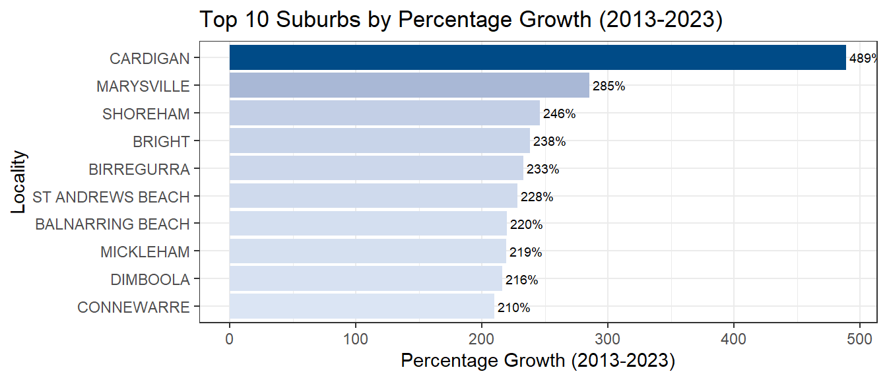
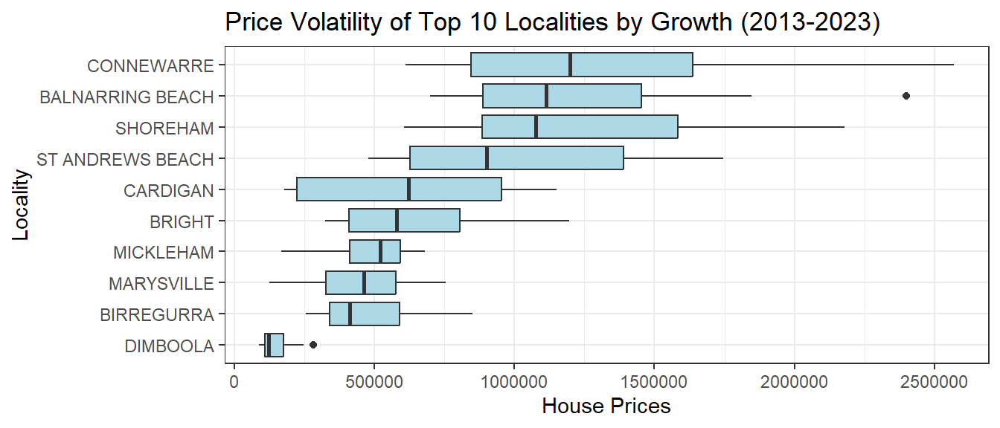

| Variable_Name | Description |
|---|---|
| Locality | The name of the suburb or locality in Melbourne. |
| 2013-2023 | Median house prices from 2013 to 2023, measured in AUD. |
| Prelim | Preliminary house price estimates for 2023. |
| 22-23 | Percentage change in median house price (2022 to 2023). |
| 13-23 | Percentage growth in house prices (2013 to 2023). |
| PA | Compound annual growth rate (CAGR) or price appreciation (PA) percentage. |
A Review
At some point, nearly everyone living in Melbourne has found themselves caught in the search for a place to buy, navigating the complexities of the city’s housing market. But can you imagine what property prices looked like a decade ago? With Melbourne’s real estate landscape evolving so dramatically, many are left wondering: which suburbs offer the best opportunities for investment, lifestyle, and long-term growth?
In this blog post, we’ll take a deep dive into Melbourne’s housing market dynamics over the past ten years, highlighting price volatility and growth trends across various suburbs from 2013 to 2023 and uncover which areas have emerged as strong contenders for future investment.
Data Overview
The data for this analysis was sourced from the Victoria State Government website , covering the period from 2013 to 2023 Table 1.
The Valuer-General Victoria (VGV) releases comprehensive data which is compiled using information lodged every time a property sale is completed. It focuses on median house prices across various suburbs in Melbourne. The key metrics include annual median prices and percentage changes for each suburb.
Data Cleaning Steps
To prepare the data for analysis, the following cleaning step was implemented:
Data Type Conversion: Several columns representing yearly median prices and assessments were converted to numeric data types to ensure accurate calculations and analyses. This step is crucial for performing statistical operations and generating visualizations.
Here is the code used for this data cleaning process:
property_data$`2013` <- as.numeric(property_data$`2013`)
property_data$`2014` <- as.numeric(property_data$`2014`)
property_data$`2015` <- as.numeric(property_data$`2015`)
property_data$`2016` <- as.numeric(property_data$`2016`)
property_data$`2017` <- as.numeric(property_data$`2017`)
property_data$`2018` <- as.numeric(property_data$`2018`)
property_data$`2019` <- as.numeric(property_data$`2019`)
property_data$`Prelim` <- as.numeric(property_data$`Prelim`)
property_data$`13-23` <- as.numeric(property_data$`13-23`)
property_data$`PA` <- as.numeric(property_data$`PA`)Handling missing Values: Some columns, like 13-23, contained NA values. Rows with missing values in the 13-23 column, which represents percentage growth over the 10-year period, were removed to ensure consistent analysis for the plot.
property_growth <- property_data %>%
select(Locality, `13-23`) %>%
drop_na(`13-23`) Understanding the Dynamics
Over the past decade, Melbourne’s property market has experienced significant fluctuations, with some suburbs witnessing rapid growth while others have remained more stable. Understanding these trends is crucial for investors, homeowners, and policymakers alike.
By analyzing the growth of the top 10 suburbs through various plots, we can uncover which areas have experienced the most consistent growth and where opportunities may lie for future investment. Whether you’re a seasoned investor, looking to buy a house or simply curious about the market, this analysis will offer valuable insights into Melbourne’s ever-changing property landscape.
Analysis
In this section, we focus on identifying the top-performing suburbs in Melbourne’s property market over the last decade, highlighting both the percentage growth in house prices and the volatility within the market.
The bar chart below presents the suburbs with the highest percentage growth in property prices between 2013 and 2023. As we can see in Figure 1, the top-performing suburb, Cardigan, witnessed a remarkable 489% growth, making it a prime candidate for investment.

The bar chart above highlights the suburbs leading in price appreciation in Melbourne over the past decade, with all experiencing remarkable increases of over 200%.
At the forefront is Cardigan, with an impressive 489% growth, indicating soaring demand driven by development and enhanced amenities, attracting families seeking a community-oriented environment.
Marysville follows with a 285% growth, reflecting its rising value as a desirable destination. Close behind are Shoreham and Bright, showing growth rates of 246% and 238%, respectively, appealing to buyers drawn to their serene coastal and hilly settings.
Birregurra and St. Andrews Beach also stand out with 233% and 228% growth, while Balnarring Beach (220%), Mickleham (219%), Dimboola (216%), and Connewarre (210%) complete the top 10.
As you explore opportunities in these thriving neighborhoods, keep in mind that such significant growth can signal both potential and challenges in the dynamic Melbourne real estate market.
To get an ease with this, we examine the price volatility of these top-performing suburbs in the box plot below.

Each box in the plot as shown Figure 2 represents the interquartile range (IQR) of house prices for a given suburb, highlighting the spread and central tendency of prices.The line within each box indicates the median price.
Connewarre takes the lead in price fluctuations, with a price range spanning from approximately $1 million to nearly $2.5 million, indicating a highly dynamic housing market.
Balnarring Beach and Shoreham exhibit significant volatility as well, but their price ranges are more contained, hovering between $1 million and $2 million. Meanwhile, St. Andrews Beach shows some extreme high outliers, reflecting a few exceptionally high-value homes that drive overall volatility.
Interestingly, Cardigan, while enjoying the highest growth, displays moderate volatility with prices ranging from $500,000 to $1.5 million. This suggests a stable growth trajectory despite some fluctuations. Conversely, suburbs like Dimboola show less volatility, pointing to a more stable housing market.
| Locality | Median Price (2023) | Percentage Growth (2013-2023) | Volatility (IQR) | CAGR (%) |
|---|---|---|---|---|
| CARDIGAN | 1045000 | 489 | 729250 | 19.4 |
| MARYSVILLE | 692500 | 285 | 250000 | 14.4 |
| SHOREHAM | 2100000 | 246 | 698000 | 13.2 |
| BRIGHT | 1100000 | 238 | 393750 | 13.0 |
| BIRREGURRA | 850000 | 233 | 249750 | 12.8 |
| ST ANDREWS BEACH | 1572500 | 228 | 762500 | 12.6 |
| BALNARRING BEACH | 2400000 | 220 | 566250 | 12.3 |
| MICKLEHAM | 680000 | 219 | 180500 | 12.3 |
| DIMBOOLA | 281000 | 216 | 68750 | 12.2 |
| CONNEWARRE | 1896500 | 210 | 790250 | 12.0 |
Conclusion
The suburbs analyzed displayed a broad spectrum of both price volatility and percentage growth over the past decade. Suburbs like Cardigan and Marysville offer promising long-term investment potential, driven by their exceptional growth rates.For an overview of all the 10 suburbs, refer to Table 2. However, their volatility must be carefully considered, as it could signal fluctuations in future market conditions.
This analysis underscores the importance of a balanced approach when making investment decisions in Melbourne’s housing market—one that considers both growth potential and the associated risks of price volatility.
For seasoned investors, these insights might signal where to allocate capital, while first-time buyers may want to be cautious about potential volatility in certain areas.
While these factors provide valuable insight, potential buyers may also want to consider factors such as interest rates, local development, and rental demand when assessing growth and volatility. Additionally, elements like local development plans, infrastructure improvements, and broader economic conditions should also be evaluated before finalizing investment choices.
Reference
Property Update. (n.d.). The best suburbs to invest in Melbourne. Retrieved October 4, 2024, from - https://propertyupdate.com.au/the-best-suburbs-to-invest-in-melbourne/ or click here